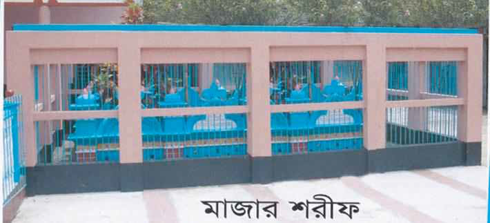

উপমহাদেশের অন্যতম শ্রেষ্ঠ আধ্যাতিড়বক প্রান কেন্দ্র মোকামিয়া দরবার শরীফ এবং শ্রেষ্ঠ ইসলামী শিক্ষার পাদপীঠ করুনা
মোকামিয়া কামিল (এম এ )মাদ্রাসা। এমন এক মহা পুরুষের সৃতি বিজড়িত যিনি ছিলেন অলিকুল শিরোমনি, মোর্শেদ
কামেল ও দক্ষিন বাংলার সকল স্তরের জনসাধারনের নয়নমনি মোকামিয়া দরবার শরিফের মরহুম পীর সাহেব শাহ সূফী
আলহাজ্ব হযরত মাওলানা হাছান উদ্দিন(রহঃ) তিনি ক্বাবার গিলাফ ধরে আলাহ তালার প্রেমে কানড়বার ¯্রােতধারায় গোটা
আরব বাসীকে তাকলাগিয়ে পরিচিতি অর্জন করেছিলেন বাংলার হাছান বলে। আরববাসী আজও যার পরিচয় খোজ করে ।
জন্ম থেকে মৃত্যু পর্যন্ত তার জীবন রাসুলেপাক (সাঃ) এর পবিত্র আদর্শের অনুসারী কৈশরে ইয়াতিম হিসেবে দারিদ্রের
যাতাকলে হয়ে অনেক দুঃখ কষ্ট সহ্য করেছেন রাসুলেপাক (সাঃ) এ আদর্শের অনুস্মরনে বাংলার এই নিবিড় বন জঙ্গলই
ছিল তার কাছে রাসুলে পাকের হেরা সাদৃশ্যধ্যানাগার তারই এক কোনে তিন আধ্যাতিড়বকধ্যান সাগরের অতল তলে ডুবে
থাকতেন তখনকার উপনিবেশিক শাসনামলে মুসলিম সমাজ স্বকীয় বৈশিষ্ট্য ও শিক্ষা সংস্কৃতি হারিয়ে পৌছেছিল
দুর্গতিরচরম সীমায় ছিলনা দ্বীনি শিক্ষার কোন কেন্দ্র।
এমনি পরিস্থিতিতে ১৯৪২ইং সনে মোকামিয়ার এই নদী নালা ও
নীবিড় জঙ্গলের মাঝে এদেশের মানুষকে ইসলামের পরশ পাথরের স্পর্শে নতুন মানুষ রুপে গড়ে তোলার জন্য অনেক
ত্যাগ তিতিক্ষা স্বীকার করে প্রতিষ্ঠা করেন করুনা মোকামিয়া কবিল মাদ্রাসা, মোকামিয়া দরবার শরীফ জামে মসজিদ ও
মেহমানখানা।